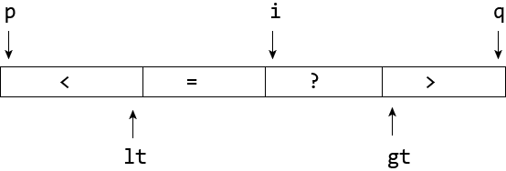
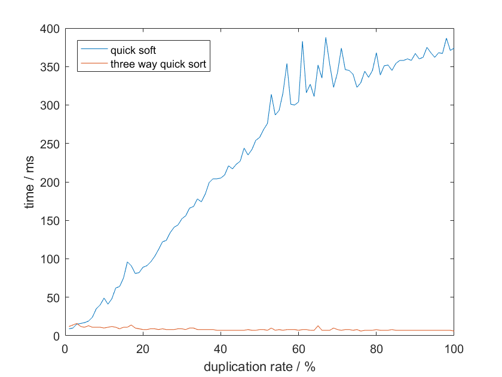

三路快速排序
文章目录
最近需要解决一个2D绘制的遮挡问题，其中画家算法是比较常用的方法，很简单，就是模仿画家从远到近绘制，远处的就被遮挡了，所以需要做的其实是对2D物体的距离也就是z值进行排序。排序当然快排是首选，但是快排有个缺点是当元素相同的时候，复杂度就变成了O(n^2)，然而2D绘制中z值重复的现象太常见了。除了快排我第一想到的是用红黑树解决这个问题，这样可以一边插入一边排序，最坏情况下也是O(nlogn)。然而红黑树是比较复杂的，而我需要解决的问题只能用C语言。后面发现了一个更好的方法：三路快速排序。普通快速排序在进行划分的时候只划分成左右小于和大于的两个部分，而三路快速排序则考虑了相等元素的影响，划分的时候分成三个区间。

算法的实现也不是很复杂，只是在partition阶段要从两个方向往中间划分，方法如下，给定一个数组a以及头元素的位置p，尾元素的位置q，因为需要划分三个区间，所以需要额外两个指针标记小于区间和大于区间的位置，其中lt总是指向小于区间的最后一个元素，gt总是指向大于区间的第一个元素，需要注意的是，一开始小于大于区间长度都为0，所以应该初始化lt=p-1, gt=p+1。然后随机选定一个主元，以及移动指针i从左往右依次与主元比较，如果与主元相等，则直接移到下一个元素；比主元小，则p自增1，于是p指向等于区间的第一个元素，然后将这个元素与i指向的元素进行交换，i再移动到下一个元素。类似的，当i指向元素大于主元时，gt先往左移，然后与i的值交互，不过这个地方需要注意移到i的元素未与主元做比较，所以指针i应该保持不变。 除此之外，还可以用随机的方法来选择主元，稳定性更强。
和普通快速排序（蓝线）做一下不严谨的比较，对于十万个元素，随着重复率的增强，三路快速排序（红线）效果卓然。

文章作者 Lianera
上次更新 2018年08月25日